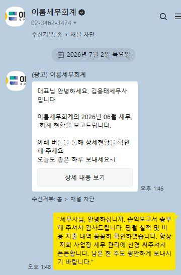
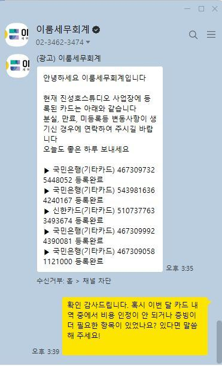

세금 걱정은 저희가,
대표님은 사업에만 집중하세요.
이룸세무회계는 IT·청년창업·병의원 업종 특화 세무사사무소입니다.
장부만 맡기는 곳이 아닙니다. 대표님 사업의 세무 파트너입니다.
IT · 청년창업 전문
병의원 특화
법인 설립부터 기장까지
첫 상담 무료
방문 + 비대면 상담
📊 매월 실적 보고서
숫자로 보는 우리 사업장
매월 카카오톡으로 받아보세요
기장 계약 고객에게 매월 자동 발송됩니다.
매출·매입·손익·부가세 4종 보고서로 사업 현황을 한눈에 확인하세요.
📈 매출현황 보고서
🛒 매입현황 보고서
💰 손익 보고서
📋 부가세 보고서
이룸을 선택하는 이유
이룸세무회계를 선택하는
4가지 이유
신고만 하고 끝나는 세무사는 넘쳐납니다. 이룸은 대표님 사업을 함께 고민합니다.
세금이 아닌 사업의 파트너
신고만 하고 끝나지 않습니다. 매월 실적 보고서로 대표님 사업의 수익 흐름을 함께 보고, 절세 기회를 먼저 찾아드립니다.
묻기 전에 먼저 알려드립니다
신고 기한이 다가오면 저희가 먼저 연락드립니다. 고객이 물어봐야 움직이는 세무사가 아닙니다.
대표 세무사가 끝까지 검토합니다
담당 직원이 바뀌어도 대표 세무사 김용태가 모든 신고서를 직접 검토합니다. 대표님 사업을 가장 깊이 아는 사람이 항상 최종 책임을 집니다.
숫자가 증명합니다
누적 고객 2,500명+, 평균 세제혜택 732만원, 고객 만족도 4.7. 좋은 세무사는 말이 아니라 숫자로 보입니다.
서비스 절차
기장 계약부터 완료까지
이렇게 진행됩니다
연락 한 번이면 시작됩니다.
1
카카오톡 or 이메일로 첫 연락
업종과 매출 규모만 알려주시면 됩니다. 5분 안에 응답, 견적 상담은 무료입니다.
견적 상담 무료2
맞춤 견적 안내 & 계약
사업 현황에 맞는 기장료와 포함 서비스를 명확하게 안내드립니다. 숨은 비용 없습니다.
투명한 보수표3
홈택스 수임동의 & 자료 인수
홈택스 수임동의 클릭 한 번이면 끝납니다. 기존 세무사 이전도 도와드립니다.
이전도 간편하게4
월별 기장 & 세금 신고
매월 장부 기장, 원천세·부가세 신고까지 챙겨드립니다. 중요 일정은 먼저 알려드립니다.
기한 누락 없음5
연간 결산 & 절세 컨설팅
연말 결산 후 내년 절세 방향까지 함께 고민합니다. 단순 신고로 끝나지 않습니다.
절세까지 완성
세금 가이드
궁금한 세금 정보,
이룸 블로그에서 바로 확인하세요
법인·청년창업·병의원·양도세·증여세까지 — 실무 중심으로 쉽게 정리했습니다.
법인·절세
대표 급여·가지급금·결산 절세 포인트
고객 후기
함께한 고객 이야기
이룸세무회계와 함께한 대표님들의 실제 후기입니다.

기장 계약 고객 · 2026년 6월

기장 계약 고객 · 2026년 6월
"투자유치 앞두고 재무 구조를 갑자기 정리해야 했던 상황"
시리즈A 준비하면서 기존 세무사는 "장부대로 드리면 된다"고 했습니다. 이룸에 물어봤더니 투자자 눈높이에서 구조 자체를 같이 다시 잡아주셨어요.
역삼동 SaaS 스타트업 대표 · 거래 2년
"개원 전부터 세무를 잘못 세팅하면 나중에 고생한다고 들었던 상황"
다른 사무소 두 군데서 견적만 받았는데, 이룸은 처음 상담에서 면세·과세 겸업 구조부터 직원 고용 형태까지 먼저 짚어줬습니다.
서초구 치과 원장 · 거래 1년 6개월
"계약 전날 밤 갑자기 세금 처리가 걱정됐던 상황"
거래처 계약 조건이 막판에 바뀌어서 밤 10시에 카카오톡으로 여쭤봤습니다. 30분도 안 돼서 답이 왔고, 덕분에 다음 날 확신 있게 계약했어요.
강남구 IT 솔루션 법인 대표 · 거래 3년
"R&D 세액공제를 받을 수 있는지조차 몰랐던 상황"
기존 세무사 3년 동안 한 번도 R&D 공제 얘기를 못 들었는데, 이룸으로 옮기고 첫 해에 어떤 비용이 해당되는지부터 같이 챙겨줘서 처음으로 공제를 받았습니다.
역삼동 AI 솔루션 스타트업 대표 · 거래 1년 6개월
"이미 낸 세금인데 돌려받을 수 있다는 연락을 먼저 받은 상황"
3년 전 신고에서 빠진 공제 항목이 있다고 먼저 연락이 왔습니다. 경정청구 후 생각지도 못한 환급이 들어왔어요. 제가 요청한 것도 아닌데 먼저 챙겨줬습니다.
강남구 개인사업자 · 거래 2년
"앱으로 혼자 신고하다가 소명 요구를 받은 상황"
홈택스 앱으로 혼자 신고했다가 국세청에서 소명 요구가 왔습니다. 어떤 서류를 어떻게 준비해야 하는지 단계별로 안내해 주셔서 별 탈 없이 마무리됐어요.
IT 프리랜서 개발자 · 거래 1년
"세무조사 결과에 이의가 있었지만 어떻게 해야 할지 몰랐던 상황"
과세 결과가 납득이 안 됐는데 어디서부터 시작해야 할지 막막했습니다. 심판청구 전 과정을 같이 준비해 주셔서 혼자라는 느낌이 없었어요.
강남구 법인 대표 · 거래 2년 3개월
"성실신고 대상이 되면서 갑자기 세금 부담이 커진 상황"
수입이 늘면서 성실신고 대상이 됐고 세금이 확 올랐습니다. 이룸에서 비용 구조를 다시 점검해줬더니 전년 대비 세금 부담이 눈에 띄게 줄었어요.
서초구 피부과 원장 · 거래 2년
자주 묻는 질문
FAQ
상담 전 가장 많이 물어보시는 질문들입니다.
기장료에 어떤 서비스가 포함되나요?
월 기장료에는 장부 기장, 부가세 신고(연 2~4회), 원천세 신고(매월), 4대보험 취득·상실 신고가 기본 포함됩니다. 법인세·종합소득세 신고는 연 1회 별도 청구됩니다. 기장 계약 고객은 카카오톡 세무 자문도 무제한으로 이용 가능합니다.
기존 세무사에서 이룸으로 변경하면 어떻게 되나요?
기존 세무대리인에게 해지 의사를 전달하신 후 연락 주시면 됩니다. 홈택스 수임동의 변경은 클릭 한 번이며, 자료 인수인계도 도와드립니다.
비대면으로 기장 계약이 가능한가요?
네, 가능합니다. 계약부터 자료 전달, 신고 확인까지 모두 카카오톡·이메일로 진행 가능합니다. 강남·서초 인근이시면 방문 상담도 환영합니다.
창업 예정인데 언제 세무사를 선임해야 하나요?
사업자등록 전에 상담하시는 게 가장 좋습니다. 개인·법인 선택에 따라 세금 구조가 완전히 달라지기 때문입니다. 기장 계약 시 사업자등록은 무료로 진행해드립니다.
세무조사를 받게 되면 어떻게 하나요?
당황하지 마시고 바로 연락 주세요. 기장 계약 고객은 세무조사 대응 및 조사관 입회가 포함됩니다. 조사 사전 준비부터 사후 이의신청·조세불복까지 함께 대응합니다.
경정청구로 세금을 돌려받을 수 있나요?
이미 납부한 세금도 5년 이내라면 경정청구로 환급받을 수 있습니다. 과거 신고 내역 검토 후 환급 가능 여부를 무료로 확인해 드립니다.
세금 고민, 혼자 안고 계시지 마세요
지금 연락 주시면 대표 세무사가 직접 확인하고 5분 안에 응답드립니다
✓ 첫 상담 무료
✓ 카카오톡 5분 응답
✓ 방문 + 비대면 상담
✓ 전국 어디서나 OK
💬
카톡 상담